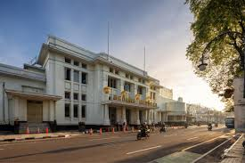

Sejarah
"Bandung, tempat di mana setiap sudutnya menyimpan cerita, mengingatkan kita pada masa lalu yang penuh kebahagiaan."
Kata Bandung berasal dari kata bendung atau bendungan karena terbendungnya sungai Citarum oleh lava Gunung Tangkuban Parahu yang lalu membentuk telaga. Legenda yang diceritakan oleh orang-orang tua di Bandung mengatakan bahwa nama Bandung diambil dari sebuah kendaraan air yang terdiri dari dua perahu yang diikat berdampingan yang disebut perahu bandung yang digunakan oleh Bupati Bandung, R.A. Wiranatakusumah II, untuk melayari Ci Tarum dalam mencari tempat kedudukan kabupaten yang baru untuk menggantikan ibu kota yang lama di Dayeuhkolot.
Berdasarkan filosofi Sunda, kata Bandung juga berasal dari kalimat Nga-Bandung-an Banda Indung, yang merupakan kalimat sakral dan luhur karena mengandung nilai ajaran Sunda. Nga-Bandung-an artinya menyaksikan atau bersaksi. Banda adalah segala sesuatu yang berada di alam hidup yaitu di bumi dan atmosfer, baik makhluk hidup maupun benda mati. Sinonim dari banda adalah harta. Indung berarti Ibu atau Bumi, disebut juga sebagai Ibu Pertiwi tempat Banda berada.
Geografis
Kota Bandung dikelilingi oleh pegunungan, sehingga bentuk morfologi wilayahnya bagaikan sebuah mangkok raksasa, secara geografis kota ini terletak di tengah-tengah provinsi Jawa Barat, serta berada pada ketinggian ±768 m di atas permukaan laut, dengan titik tertinggi di berada di sebelah utara dengan ketinggian 1.050 meter di atas permukaan laut dan sebelah selatan merupakan kawasan rendah dengan ketinggian 675 meter di atas permukaan laut.
Kota Bandung dialiri dua sungai utama, yaitu Sungai Cikapundung dan Sungai Citarum beserta anak-anak sungainya yang pada umumnya mengalir ke arah selatan dan bertemu di Sungai Citarum. Dengan kondisi yang demikian, Bandung selatan sangat rentan terhadap masalah banjir terutama pada musim hujan.
Puisi Bandung
Menjelang 365 hari selepas temu semu itu,
Bandung tetaplah dingin dan penuh senyum Berpuluh-puluh puisi berlabuh,
ia terjerembap, jatuh pada pelukan bayangmu Di sinilah,
rasa bermula Bandung, kota kita berdua.
Bandung, 05 Desember 2023
~ Karya : Gibran Wijaya
Wisata

Sejak dibukanya Jalan Tol Cipularang, kota Bandung telah menjadi tujuan utama dalam menikmati liburan akhir pekan terutama dari masyarakat yang berasal dari Jakarta sekitarnya. Selain menjadi kota wisata belanja, kota Bandung juga dikenal dengan sejumlah besar bangunan lama berarsitektur peninggalan Belanda.
Farm House Lembang
Berada di jalur utama Bandung-Lembang, Farm House menjadi objek wisata yang tidak pernah sepi pengunjung. Selain karena letaknya strategis, kawasan ini juga menghadirkan nuansa wisata khas Eropa. Semua itu diterapkan dalam bentuk spot swafoto Instagramable.
Observatorium Bosscha
Memiliki beberapa teleskop, antara lain, Refraktor Ganda Zeiss, Schmidt Bimasakti, Refraktor Bamberg, Cassegrain GOTO, dan Teleskop Surya. Refraktor Ganda Zeiss adalah jenis teleskop terbesar untuk meneropong bintang. Benda ini diletakkan pada atap kubah sehingga saat teropong digunakan, atap tersebut harus dibuka. Observatorium Bosscha boleh dikunjungi oleh siapa pun, tanpa tiket. Namun, bagi yang ingin menggunakan teleskop Zeiss, wajib mendaftarkan diri. Untuk instansi atau lembaga pendidikan, diberikan jadwal hari Selasa sampai Jumat. Sementara itu, kunjungan individu dibuka setiap hari Sabtu.